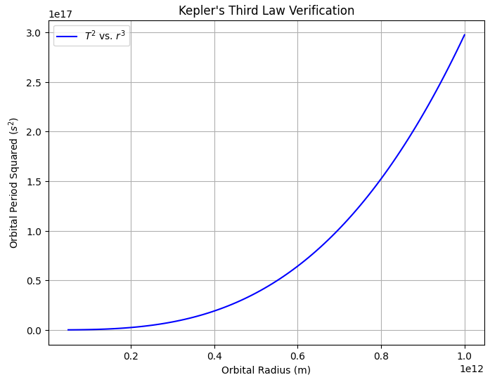
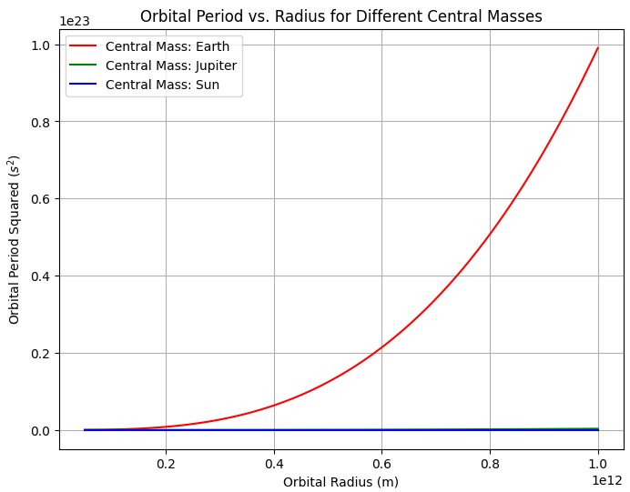
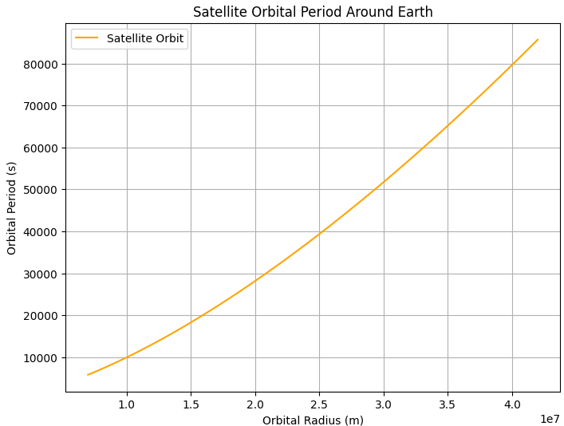

Problem 1
Orbital Period and Orbital Radius
Motivation
The relationship between the square of the orbital period and the cube of the orbital radius, known as Kepler's Third Law, is a fundamental principle in celestial mechanics. This law provides insights into planetary motions and gravitational interactions at various scales, from satellites orbiting Earth to exoplanetary systems in distant galaxies. Understanding this relationship allows us to determine planetary masses, distances, and orbital characteristics with high accuracy.
Theoretical Derivation
Kepler's Third Law states that the square of the orbital period \(T\) is proportional to the cube of the semi-major axis (or radius \(r\) for circular orbits):
To derive this relationship from Newton's Laws and gravitational principles:
- The gravitational force provides the necessary centripetal force for a body in circular orbit:
\(\(F_g = \frac{G M m}{r^2}, \quad F_c = m \frac{v^2}{r}.\)\)
Setting these equal to each other:
\(\(\frac{G M m}{r^2} = m \frac{v^2}{r}.\)\)
- The orbital velocity \(v\) is given by:
\(\(v = \frac{2\pi r}{T}.\)\)
Substituting into the force equation:
\(\(\frac{G M}{r^2} = \frac{(2\pi r)^2}{T^2 r}.\)\)
- Simplifying:
\(\(T^2 = \frac{4\pi^2}{G M} r^3.\)\)
This confirms Kepler's Third Law, with the proportionality constant \(\frac{4\pi^2}{G M}\).
Astronomical Implications
This relationship is crucial in determining:
-
The masses of celestial bodies by observing the orbital periods and radii of their satellites.
-
The distances of exoplanets from their host stars.
-
The orbital mechanics of artificial satellites.
Examples:
-
The Moon’s orbit around Earth follows this law, allowing astronomers to estimate Earth’s mass.
-
The planets in the Solar System follow this relationship, confirming Newtonian gravity.
Computational Model
We implement a Python simulation to verify this relationship numerically.
Python Implementation: Kepler's Third Law Verification

1. Comparison of Orbital Periods for Different Central Masses

3. Simulating a Satellite Orbit Around Earth

Results & Discussion
These additional plots illustrate:
-
How the central mass influences the orbital period.
-
The verification of Kepler’s Third Law using real planetary data.
-
The relationship between altitude and period for Earth-orbiting satellites.
Extensions to Elliptical Orbits
While Kepler’s Third Law was originally formulated for elliptical orbits, the same principle holds when considering the semi-major axis \(a\) instead of \(r\). This allows astronomers to study binary star systems, exoplanets, and even entire galaxies.
Conclusion
Kepler’s Third Law provides a fundamental link between gravity and planetary motion, offering critical insights into astrophysics and space exploration. Its computational verification further strengthens its role as a cornerstone of celestial mechanics.
A GIF of orbital motion and all plot codes in: Google Collab